Chart of Hybridized Models
human_endorsement_required: Hermes checks the transplant grammar and render contract; it does not certify a student-work reading.
| Case | One unit | Licensed home | Transplant | Hybrid model | Grammar proof |
|---|---|---|---|---|---|
circle partition on rectanglecircle_partition_on_rectangle | 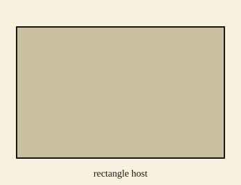 Step 1 host_shape(rectangle_area_model) Choose a rectangle as the area-model host. | 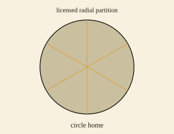 Step 2 licensed_home(circle_radial_partition,circle_region) The radial partition is licensed inside the circle-region vocabulary. | 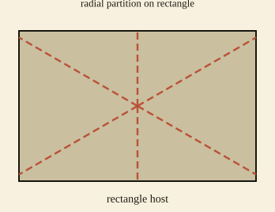 Step 3 transplant(circle_radial_partition,rectangle_area_model) Transplant the circle partition rule onto the rectangle host. | Temporal filmstrip | circle_radial_partitionlicensed in circle_regionplaced on rectangle_area_modelobject_language_binding_violation |
vertical partition on circlevertical_partition_on_circle | 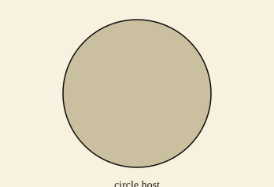 Step 1 host_shape(circle_region) Choose a circle as the region host. | 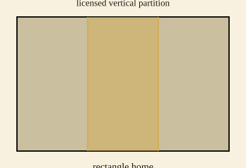 Step 2 licensed_home(rectangle_vertical_partition,rectangle_area_model) The vertical partition is licensed inside the rectangle area-model vocabulary. | 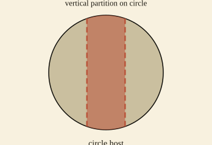 Step 3 transplant(rectangle_vertical_partition,circle_region) Transplant the rectangle's vertical partition rule onto the circular host. | Temporal filmstrip | rectangle_vertical_partitionlicensed in rectangle_area_modelplaced on circle_regionobject_language_binding_violation |
radial partition on setradial_partition_on_set | 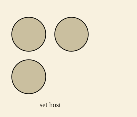 Step 1 host_shape(fractional_set_model) Choose a collection as one fractional set host. | 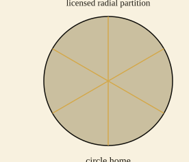 Step 2 licensed_home(circle_radial_partition,circle_region) The radial partition is licensed inside the circle-region vocabulary. | 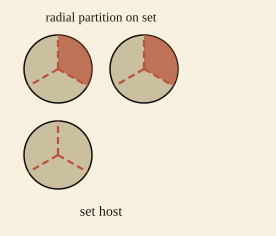 Step 3 transplant(circle_radial_partition,fractional_set_model) Transplant the circle's radial partition rule onto each element of the set host. | Temporal filmstrip | circle_radial_partitionlicensed in circle_regionplaced on fractional_set_modelobject_language_binding_violation |
parallel partition on triangleparallel_partition_on_triangle | 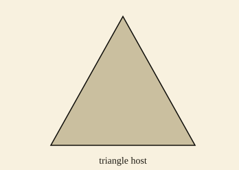 Step 1 host_shape(triangle_region) Choose a triangle as the region host. | 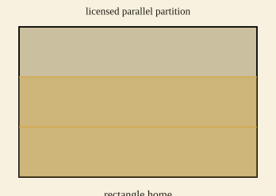 Step 2 licensed_home(rectangle_parallel_partition,rectangle_area_model) The parallel band partition is licensed inside the rectangle area-model vocabulary. | 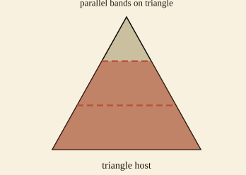 Step 3 transplant(rectangle_parallel_partition,triangle_region) Transplant the rectangle's parallel partition rule onto the triangular host. | Temporal filmstrip | rectangle_parallel_partitionlicensed in rectangle_area_modelplaced on triangle_regionobject_language_binding_violation |
{kind=link}
{kind=link}
{kind=link}
{kind=link}